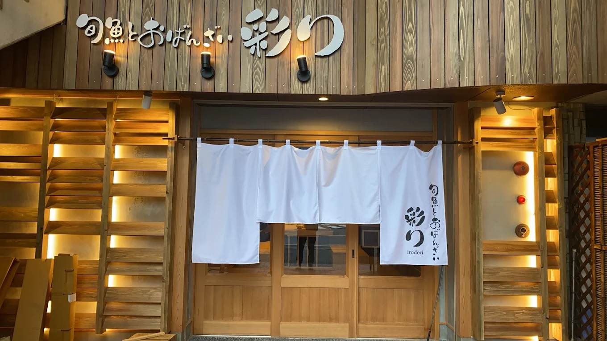
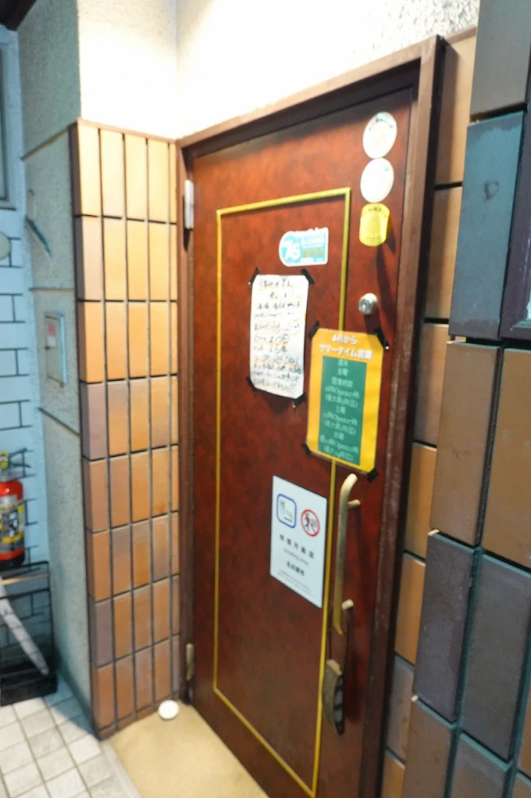
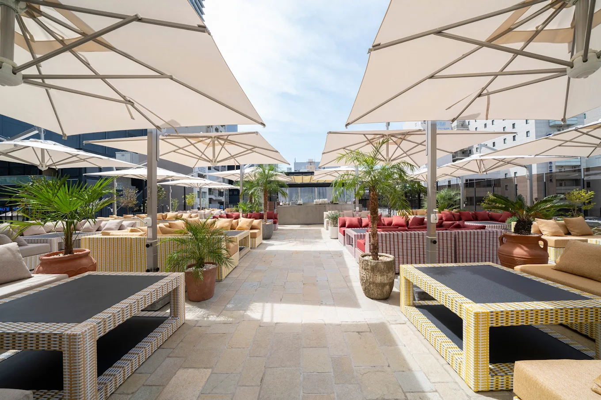
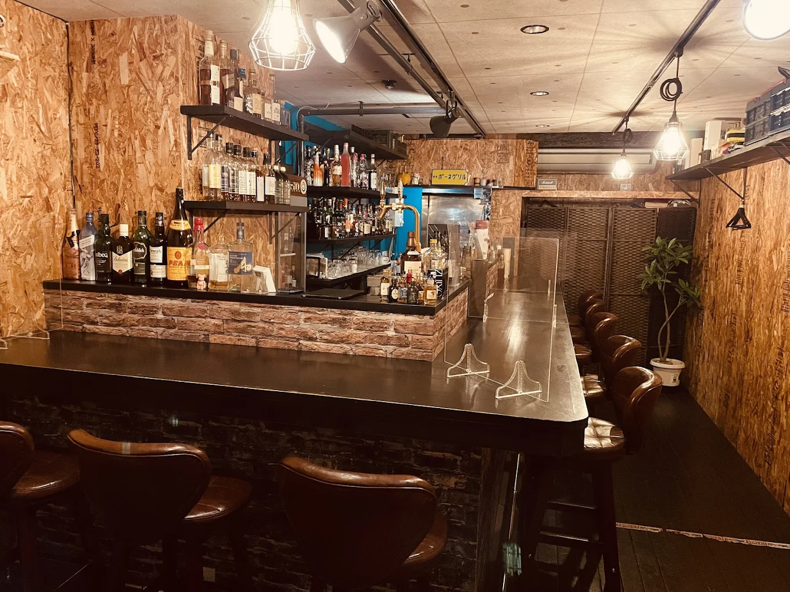
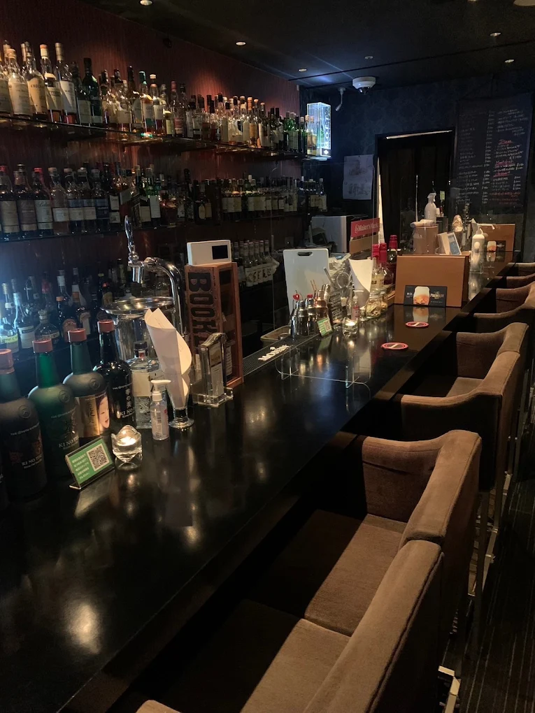

酒好きの筆者が名古屋でおすすめする最高の居酒屋&バー
東海地方で最も多くの夜の店が密集する名古屋エリアでは「店が多すぎてどこが良いのか分からない」といった声が絶えないだろう。本記事では名古屋で１０年以上生活した筆者が、実際に行った居酒屋とバーの中から良かった店を紹介しよう。
最後までぜひとも読んでほしい。
レッドブルは翼を授け、お風呂は命の洗濯と言われるなら、お酒は荒んだ心を癒す霊薬と言えよう。長時間労働にブラック企業、魂をすり減らす人間関係と停滞する日本社会を生きる全ての労働戦士たちに今日を生きる糧を捧げよう。

居酒屋
| 「旬魚とおばんざい 彩り」 | 和食・鮮魚 | 大曽根エリア |
|---|---|---|
| 「うりずん」 | 沖縄料理 | 大曽根エリア |
| 「かいえん」 | 和食・日本酒 | 大曽根エリア |
| 「スタミナハウス」 | 鉄板焼肉 | 守山エリア |
| 「炭火焼肉とんちゃんけんちゃん」 | 焼肉・激安とんちゃん | 東区泉 |
| 「ラ・ポルケッテリア」 | 本格イタリアン | 今池エリア |
| 「海鮮酒場かにきち」 | 創作料理・酒種類(大) | 栄エリア |
| 「WASHOKU 和 なごみ」 | 創作料理 | 丸の内エリア |
| 「Pagina the roof」 | おしゃれBBQ | 錦エリア |
| 「ロカンタ アイハン」 | トルコ料理 | 錦エリア |
BAR
| 「ポーネグリル」 | 料理・ウイスキー | 今池エリア |
|---|---|---|
| 「ダイス(cafe&bar dice)」 | 正統派バー | 栄エリア |
| 「YOSHINOBAR」 | 高級感バー | 錦エリア |
【おすすめ居酒屋１０店】
1「旬魚とおばんざい 彩り」（要予約）
名古屋市北区山田
※JR・瀬戸線・名城線-大曽根駅から徒歩6分

Googleマップの評価「星４.８」
板前で修業した大将の作る旬の鮮魚とおばんざいの居酒屋

6「ラ・ポルケッテリア」（要予約）
名古屋市千種区今池
※東山線・桜通線-今池駅から徒歩2分

Googleマップの評価「星４.３」
ワインソムリエがアドバイスしてくれる、本場イタリアの味が食べられる最高のイタリアン
7「海鮮酒場かにきち」
名古屋市中区栄４丁目
※東山線・名城線・瀬戸線-栄駅・栄町駅から徒歩5分

Googleマップの評価「星４.５」
酒の種類は多すぎて未知数、クセのある店主が作る絶品創作料理の隠れ居酒屋
9「Pagina the roof」（予約必須）
名古屋市中区栄
※東山線・鶴舞線-伏見駅から徒歩2分

Googleマップの評価「星３.８」
おしゃれさ最高、開放感のある屋上でBBQができるお店
【おすすめバー３店】
1「ポーネグリル」
名古屋市千種区内山
※東山線・桜通線-今池駅から徒歩2分

Googleマップの評価「星４.５」
バーなのに客先でピザを回す、ドリンクメニューはほぼ飾り、大量の酒と陽気な店主がいるバー
2「ダイス(cafe&bar dice)」
名古屋市中区栄
※東山線・名城線・瀬戸線-栄駅・栄町駅から徒歩5分

Googleマップの評価「星４.６」
栄で飲み歩きの最後の一店に最適、静かな雰囲気な正統派のバー
【酒ガチャ通販サイト「クランド」】
お酒のガチャができる通販をご存じだろうか？
クランドというサイトでは通常の店頭販売のお酒ではない、ブランド独自のビール・焼酎・日本酒・ワイン・リキュールなどが購入できる。その中でも酒ガチャ、特に年末の酒ガチャイベントは熱い。
酒ガチャのシステムは松・竹・梅のように段階的な料金設定がされたお酒のお得パックのようなもので、入っている酒は一本数千円から２万相当のものまでランダムだ。
私は過去に２０本入りの最上級の酒ガチャを回したが、一本２万相当のヴィンテージ梅酒やウイスキーのように１０年熟成された焼酎などが当たった。苦手な酒の種類があるならば、購入時の設定で「焼酎なし・ワインなし」など特定の酒が飲めない人でも安心だ。酒好きの人は是非とも頼んでみることをおすすめする。
今年の年末は酒ガチャを回して、家族・親戚や友人などと一緒に、酒瓶で年末の除夜の鐘を打ち鳴らそう。